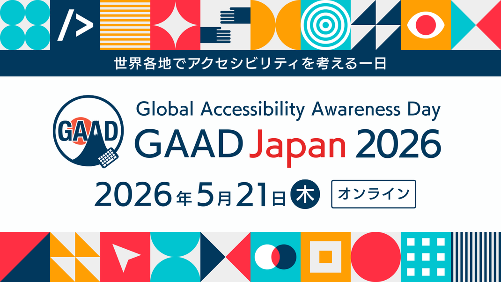
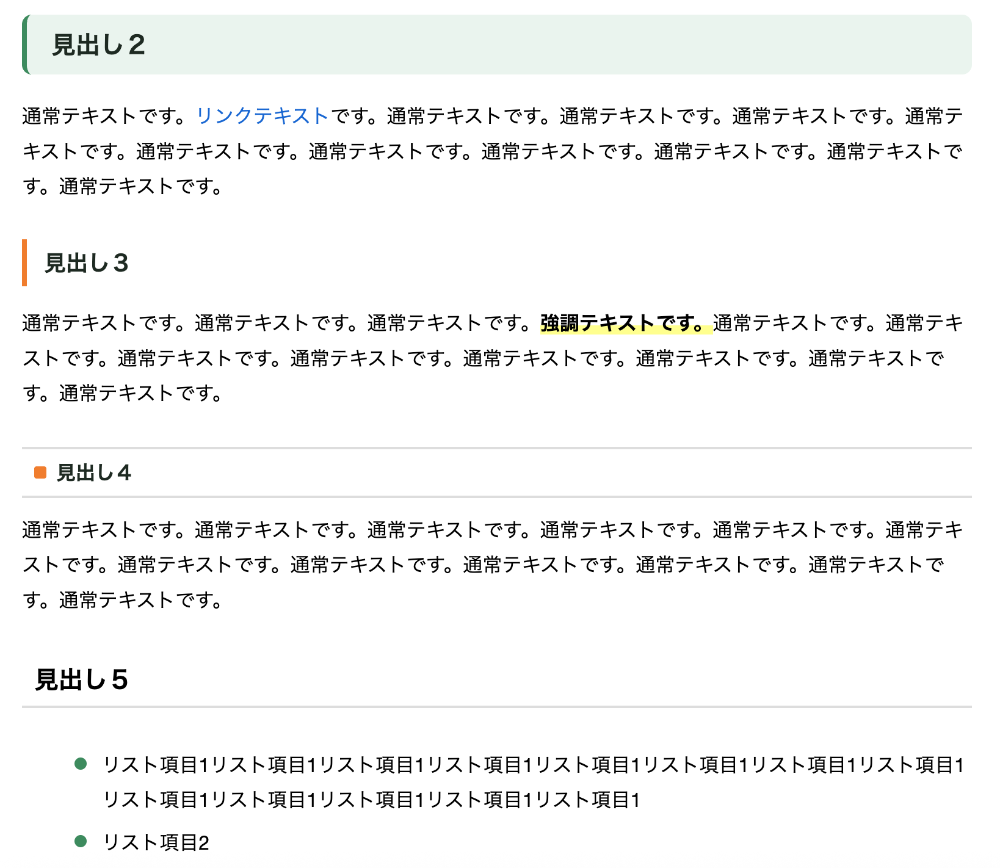
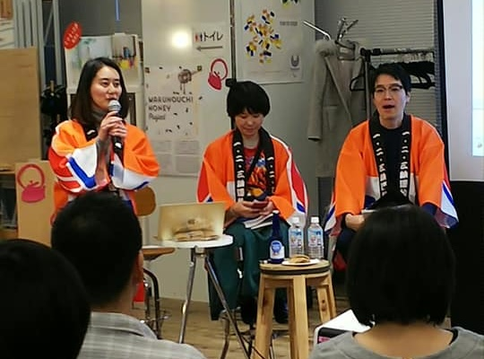
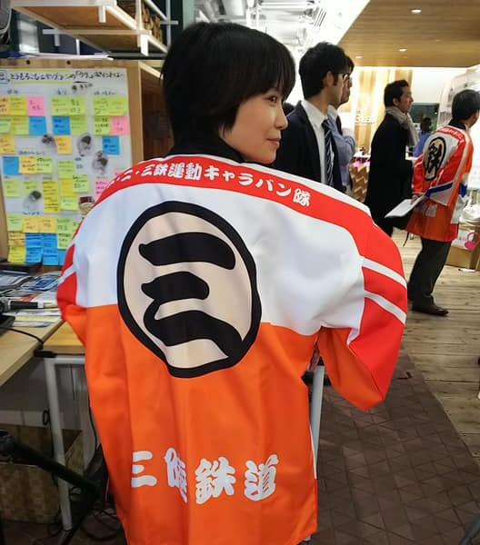
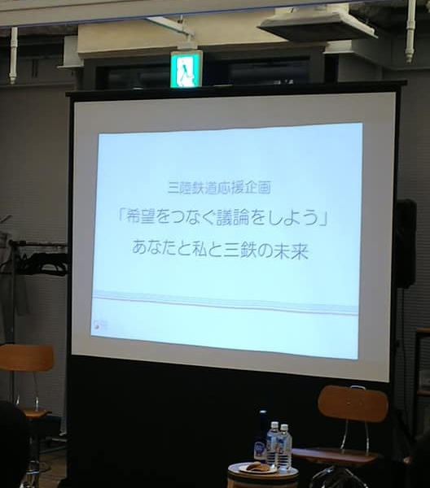

広告UIを2年半事故ゼロで安定運用

新規サービス50画面のUI設計/実装まで完結

保護者向けサイト新規UI設計/実装まで完結


該当する案件がありません。

デジタルアクセシビリティを考える日「GAAD Japan」イベントにボランティアとして参加。リアルタイム字幕を提供するUDトークの編集を担当し、音声認識の誤変換をリアルタイムで修正した。

WordPressを用いた地域情報サイトを開発中。Claude CodeをはじめとするAIツールを実務に統合しながら、スタイルガイドの整備と並行して、設計と実装を一人で担っている。
CoderDojoの立ち上げを準備中。子どもたちがテクノロジーと創造的に関わる場を地域につくることを目指している。文系からIT・デザイン・実装へと越境してきた経験を、次の世代に渡していきたいと考えている。
東日本大震災で少しでも地元の役に立てればという思いで活動した一部をご紹介。
それまでの業務で培ったスキルがこれらの活動に活き、また活動を通じて得た経験がその後の仕事にも影響している。

震災後、岩手県沿岸部に向かう人が多くいる中、現地の様子が変わり情報を得にくくなっていることに気づき、震災直後のお店の情報をSNS等で収集しマップに記録・公開した。SNSで拡散され、現地に行った方から新たな情報を頂き常にブラッシュアップし、多くの方に活用いただけた。
災害時、必要な情報へ辿り着けない状況を目の当たりにし、情報設計や可視化の重要性を改めて実感した。

＠岩手県遠野市
ITで復興支援を考えるHack For Japan岩手版の第１回目イベントに参加した。
アイディアソンで出たアイディアを基に５つのチームが発足し、私は情報発信チームに所属。震災直後にたちあがった遠野市のボランティアセンター「遠野まごころネット」のWebサイトデザインに携わった。


＠岩手県釜石市/陸前高田市
海外から来たOpenStreetMapのマッパーの方々を案内しながら、釜石市や陸前高田市など復興していく街の地図づくりのお手伝いをした。


＠HUB TOKYO
それまで別々で岩手を応援する活動をしている方々が一同に介したイベントを開催。
私はスタッフの１人として、イベントの企画・運営の他、スタッフTシャツ・のぼり旗をデザインした。
各団体のこれまでとこれからの活動報告や、岩手直送の美味しいものを食したり、情報交換をしたり、新しいつながりが生まれ参加者の方々にとって有意義なイベントとなった。



＠3×3 Lab Future
東京で毎年開催されている岩手を応援するイベント「岩手わかすフェス」の「三陸鉄道応援企画」にて一般ユーザー枠でパネルディスカッションに登壇。事前のアンケートで集めた地元の声を三陸鉄道社長や会場の方に共有した。


お仕事のご依頼や採用に関するお問い合わせ、
お気軽にメッセージをお寄せください。
または LinkedIn から直接ご連絡いただくことも可能だ。